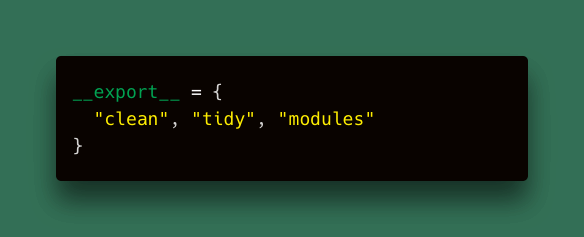
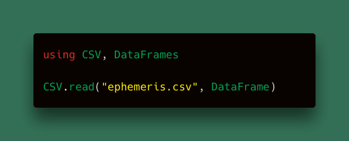
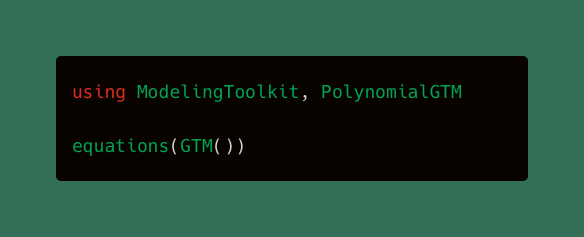

loopy.software
write(loopy.software)
Writing relating to scientific computing, astrodynamics, and politics.
Exploring skip-entry dynamics in celebration of Artemis 1!
The actions taken by Houston Police at the Commissioners Court were antidemocratic.

We can and should do more to clean up our Python namespaces!

How to fetch solar system ephemeris data for free!

An introduction to dynamics through scientific software.